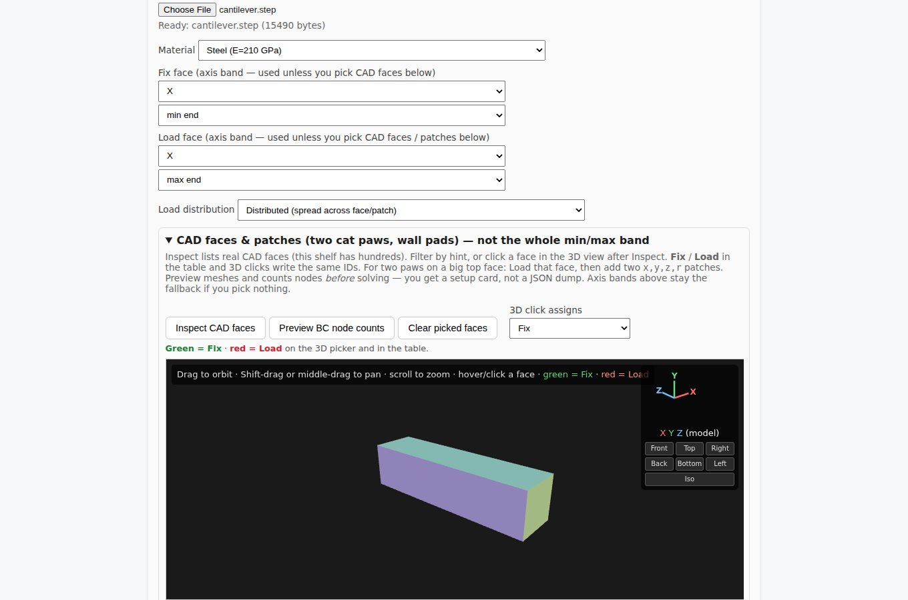
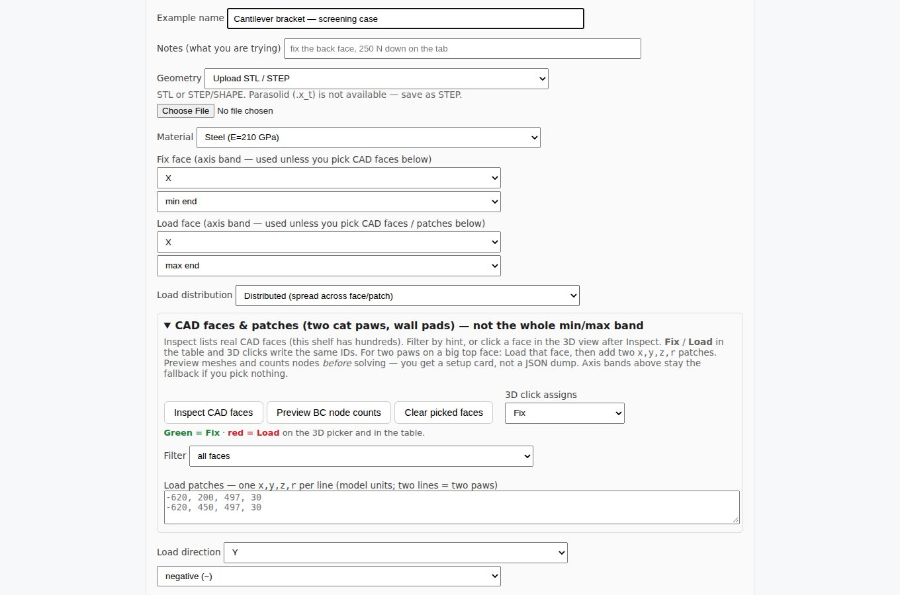

Supports and loads go where the engineer means them to go. The app lists a model's real CAD faces and lets you click them in 3D. You see how many mesh nodes each choice catches before you spend a solve on it.

The CAD faces panel for an uploaded STEP part. Each face has an ID and a color in the 3D view, and the same IDs appear in the table. Clicking a face assigns it as fixed (green) or loaded (red). The orbit, pan, zoom and view-cube controls work the way they do in CAD tools.
Real equipment is rarely loaded on a whole face. Round load patches let you place a load where it actually lands, such as two feet on a large top surface or a pad on a wall, by giving a center and a radius.
Boundary conditions are where most bad FEA starts. Showing the node count before solving catches a support that grabbed nothing, or a load spread over the wrong area, while it is still cheap to fix. If no faces are picked, the simple axis-band default (one end fixed, the other loaded) still applies.

The full setup form: example name and notes, geometry source, material, fix and load faces, and load direction.